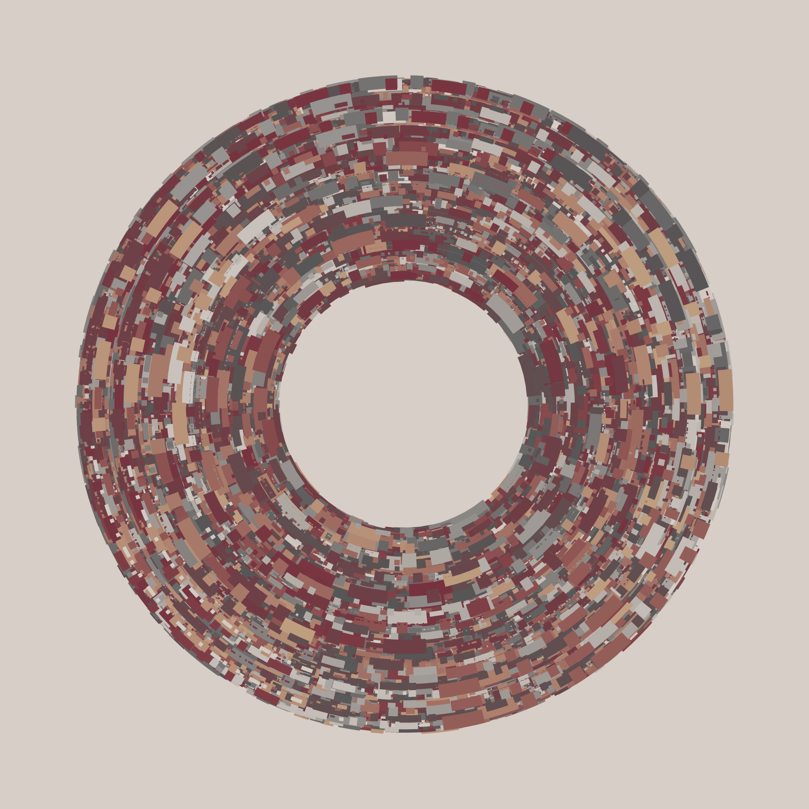
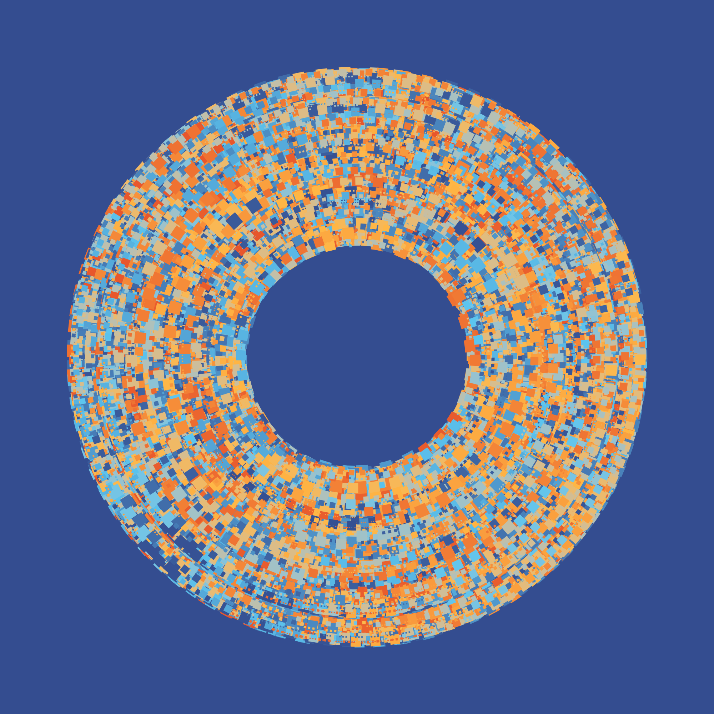
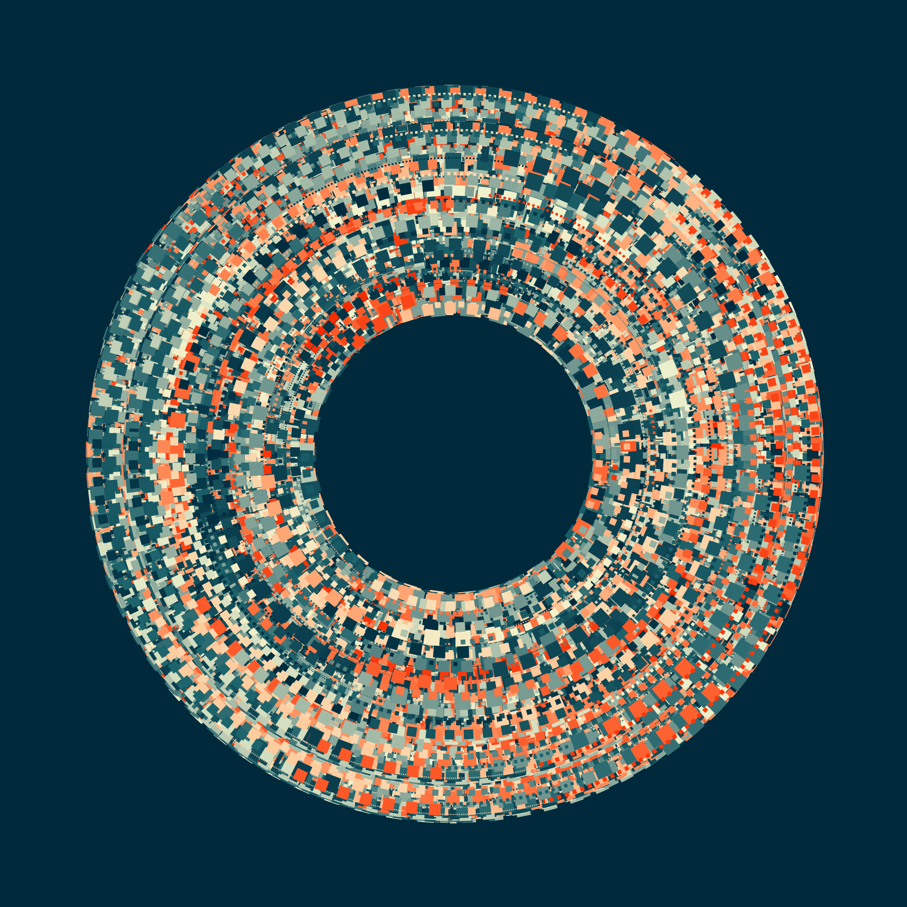
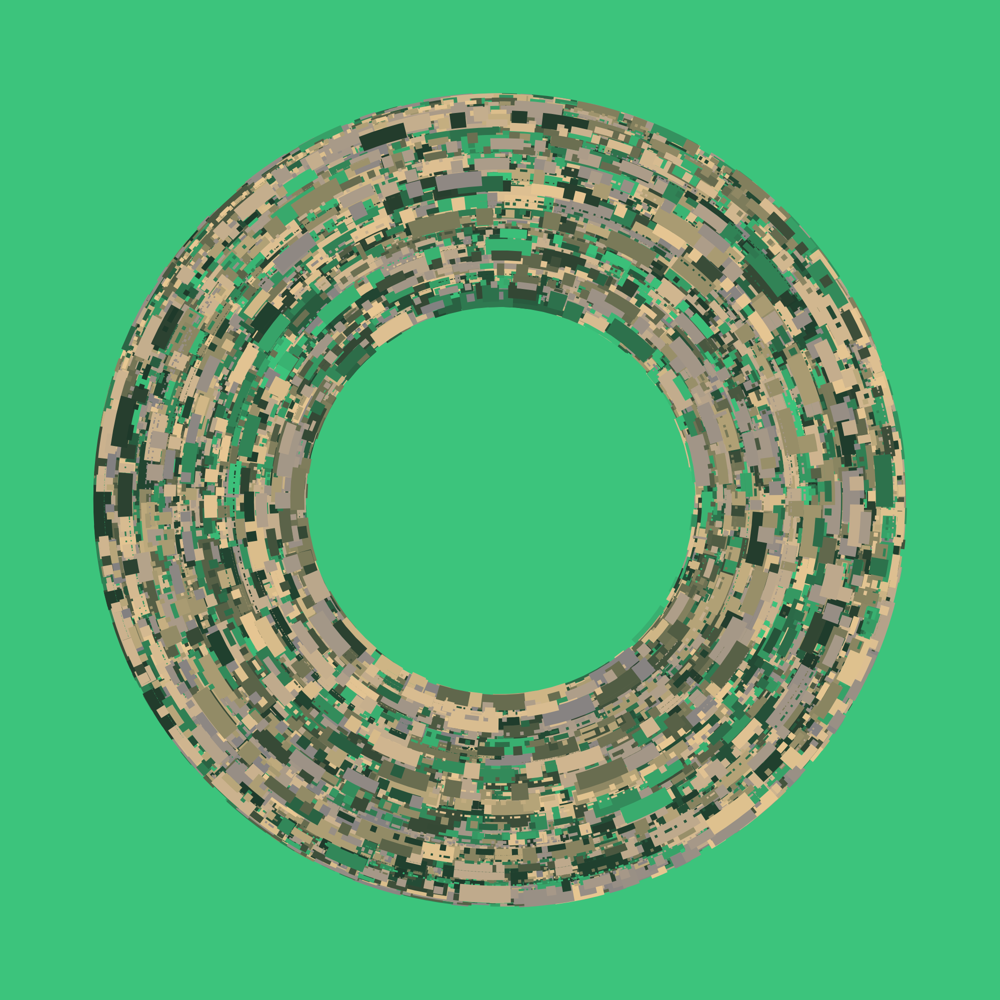
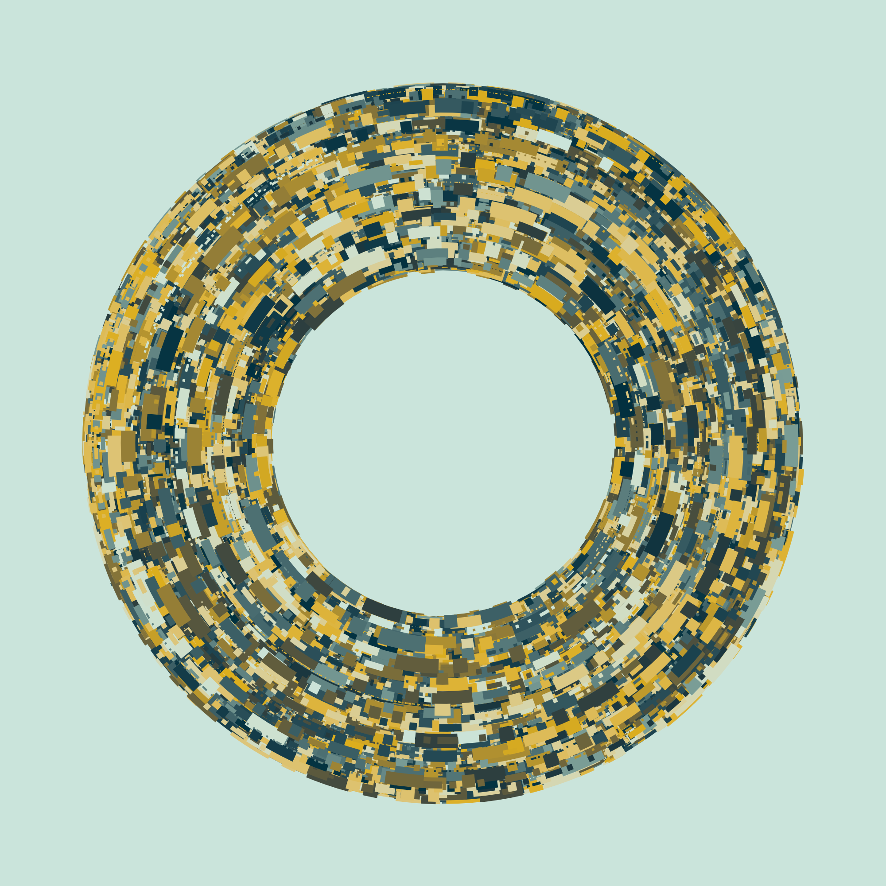
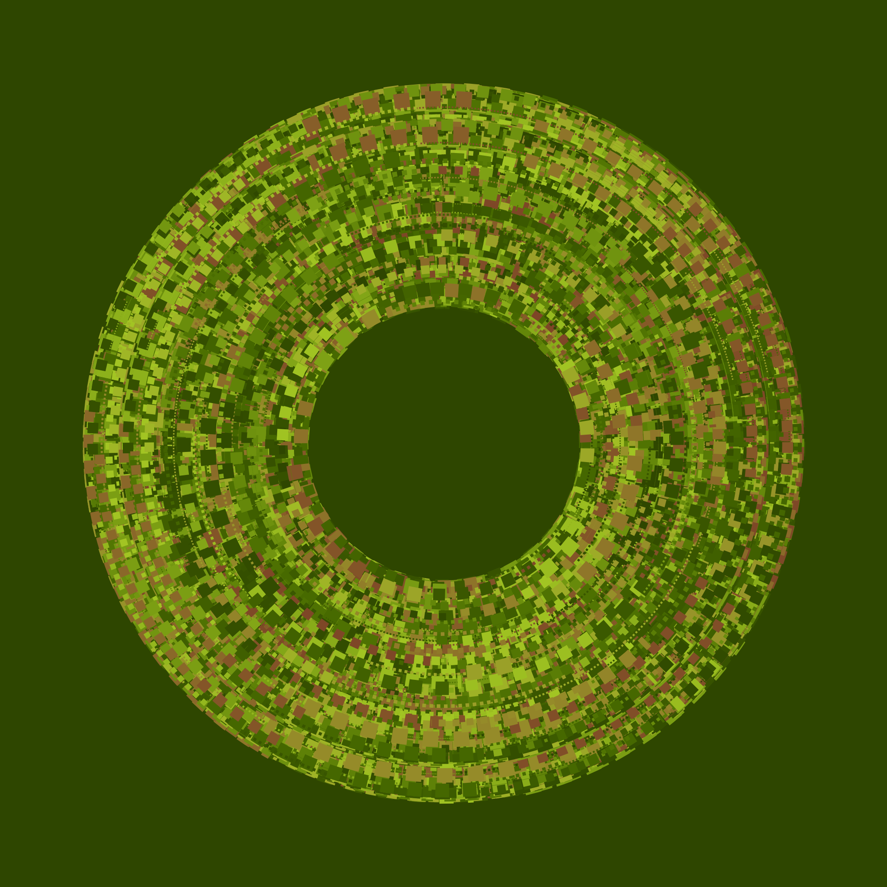
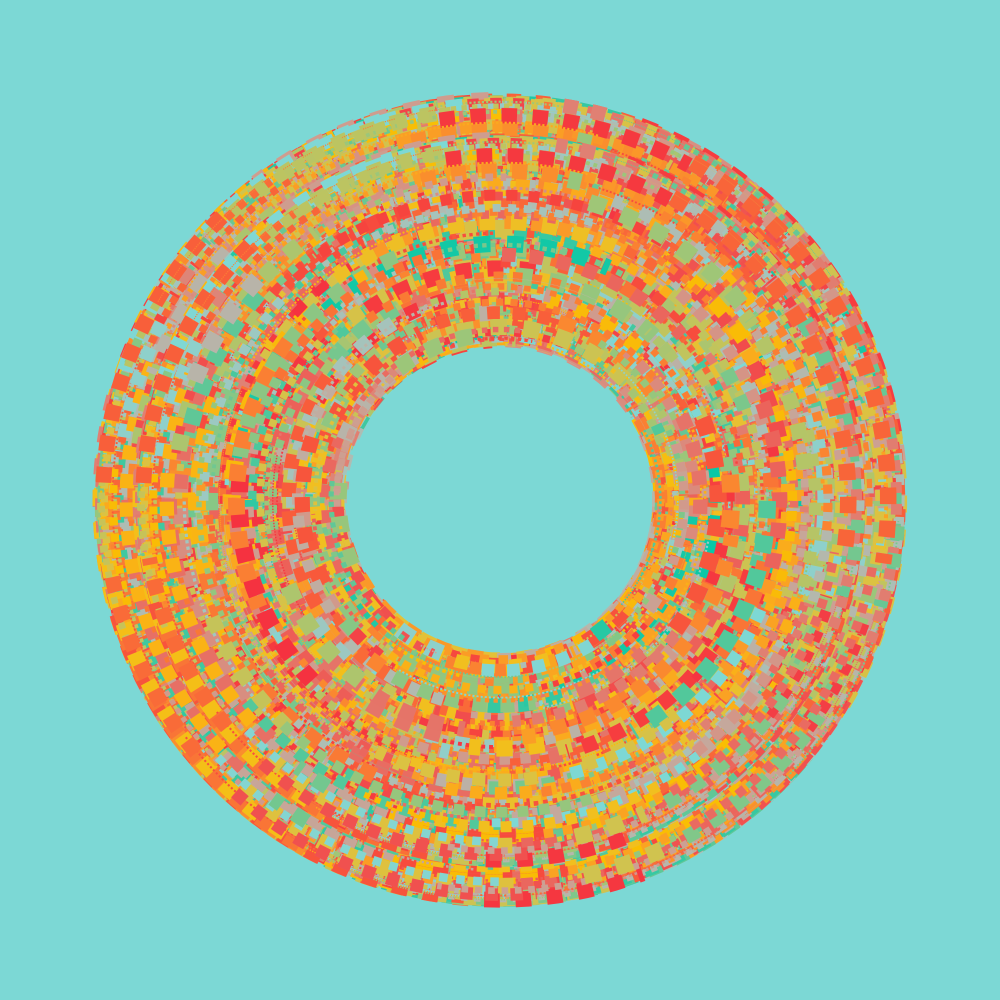
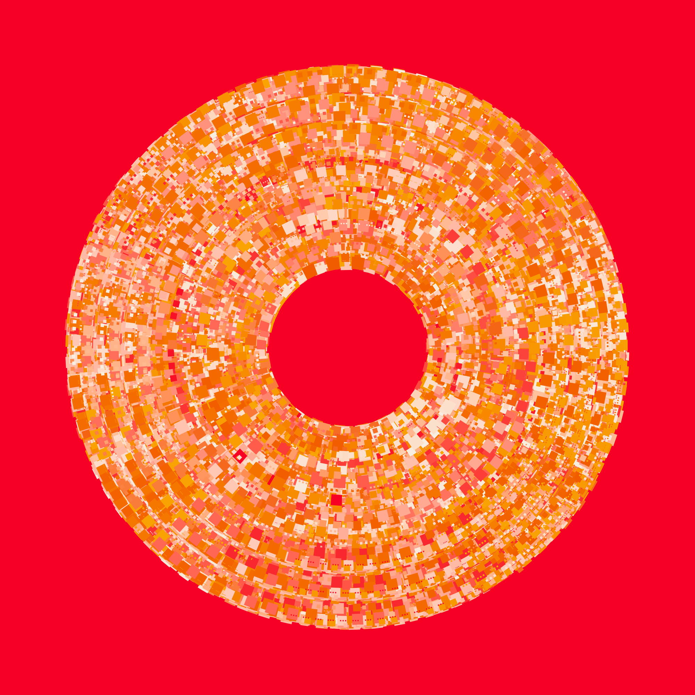

![]()
library(tictoc)
tic()
donut(seed = 100)
toc()8.524 sec elapsedOkay. So I wrote a simple package for multi-threaded tasks queues in R this week. It wasn’t intentional, I swear. I was just trying to teach myself how to use the callr package, and making sure I had a solid grasp of encapsulated object-oriented programming with R6. Things got a little out of hand. Sorry.
And let’s be very clear about something at the outset. If you want to do parallel computing in R correctly, you go look at futureverse.org. The future package provides a fabulous way to execute R code asynchronously and in parallel. And there are many excellent packages built on top of that, so there’s a whole lovely ecosystem there just waiting for you.1 Relatedly, if the reason you’re thinking about parallel computing is that you’ve found yourself with a burning need to analyze terabytes of data with R then babe it might be time to start learning some R workflows using Spark, Arrow, Kubernetes. It may be time to learn about some of those other eldritch words of power that have figured rather more prominently in my life than one might expect for a simple country girl.2
My little queue package is a personal project. I happen to like it, but you should not be looking at it as an alternative to serious tools.
That’s been said now. Good. We can put aside all pretension.
Let’s say I have a generative art function called donut(), based loosely on a teaching example from my art from code workshop. The donut() function takes an input seed, creates a piece of generative art using ggplot2, and writes the output to an image file. This process takes several seconds to complete on my laptop:
library(tictoc)
tic()
donut(seed = 100)
toc()8.524 sec elapsedHere’s the piece, by the way:

That’s nice and I do like this piece, but generative art is an iterative process and I like to make many pieces at once to help me get a feel for the statistical properties of the system. Waiting 8.5 seconds for one piece to render is one thing: waiting 15 minutes for 100 pieces to render is quite another. So it’s helpful if I can do this in parallel.
library(queue)Here’s how I might do that with queue:
q1 <- Queue$new(workers = 6)
for(seed in 101:108) q1$add(donut, list(seed))
out1 <- q1$run(message = "verbose")→ Done: task_4 finished in 4.26 secs→ Done: task_1 finished in 5.28 secs→ Done: task_5 finished in 6.37 secs→ Done: task_3 finished in 7.28 secs→ Done: task_2 finished in 7.44 secs→ Done: task_6 finished in 8.11 secs→ Done: task_7 finished in 6.19 secs→ Done: task_8 finished in 5.58 secs✔ Queue complete: 8 tasks done in 10.9 secsIt doesn’t run six times faster. There’s overhead: R sessions have to be initialised, the scheduler needs to assign the tasks, data have to be serialised and passed between R sessions and so on. Perhaps most importantly, my little laptop doesn’t really have six cores to spare. There’s reason why the sixth worker took 20 seconds to finish – the operating system didn’t have any spare resources to allocate.


For comparison, let’s make another eight pieces, this time with only three workers:
q2 <- Queue$new(workers = 3)
for(seed in 109:116) q2$add(donut, list(seed))
out2 <- q2$run(message = "verbose")→ Done: task_1 finished in 10.7 secs→ Done: task_2 finished in 10.8 secs→ Done: task_3 finished in 11.4 secs→ Done: task_4 finished in 4.92 secs→ Done: task_5 finished in 4.8 secs→ Done: task_6 finished in 9.06 secs→ Done: task_7 finished in 9 secs→ Done: task_8 finished in 10.8 secs✔ Queue complete: 8 tasks done in 26.4 secsThe completion time is essentially the same. Ultimately, whenever you’re using multithreading as your mechanism for parallel computing, you’re relying on the operating system to do the work for you. The queue package doesn’t do any clever scheduling. All it does is set the R process running and polls them intermittently to see if they’ve finished their assigned tasks. The operating system tasks care of low level details. If you create 100 workers but your machine only has 3 cores free, well, the operating system isn’t a magic wand. It can’t make computing resources appear if they don’t exist.
By default, queue sets the concurrency to 4 workers, on the – thorougly unscientific – logic that this usually speeds things up on my laptop without being absurd, and pushing any higher than that rarely does anything useful.








Okay, so let’s take a look at what it actually stores
out1 task_id worker_id state result runtime
1 task_1 555843 done donut_101.png 5.282254 secs
2 task_2 555855 done donut_102.png 7.442093 secs
3 task_3 555867 done donut_103.png 7.276114 secs
4 task_4 555879 done donut_104.png 4.259732 secs
5 task_5 555892 done donut_105.png 6.365720 secs
6 task_6 555904 done donut_106.png 8.114676 secs
7 task_7 555879 done donut_107.png 6.190101 secs
8 task_8 555843 done donut_108.png 5.578790 secs
fun
1 function (seed, filename = paste0("donut_", seed, ".png"), width = 2000, , height = 2000, dpi = 300, units = "px", ...) , {, sample_canva <- function(seed = NULL) {, if (!is.null(seed)) , set.seed(seed), sample(ggthemes::canva_palettes, 1)[[1]], }, sample_data <- function(seed = NULL, n = 100) {, if (!is.null(seed)) , set.seed(seed), dat <- tibble::tibble(x0 = stats::runif(n), y0 = stats::runif(n), , x1 = x0 + stats::runif(n, min = -0.2, max = 0.2), , y1 = y0 + stats::runif(n, min = -0.2, max = 0.2), , shade = stats::runif(n), size = stats::runif(n), , shape = factor(sample(0:22, size = n, replace = TRUE))), }, donut_style <- function(data = NULL, palette) {, ggplot2::ggplot(data = data, mapping = ggplot2::aes(x = x0, , y = y0, xend = x1, yend = y1, colour = shade, linewidth = size)) + , ggplot2::coord_polar(clip = "off") + ggplot2::scale_y_continuous(expand = c(0, , 0), limits = c(-1, 1), oob = scales::oob_keep) + , ggplot2::scale_x_continuous(expand = c(0, 0), limits = c(0, , 1), oob = scales::oob_keep) + ggplot2::scale_colour_gradientn(colours = palette) + , ggplot2::scale_linewidth(range = c(0, 4)) + ggplot2::theme_void() + , ggplot2::theme(panel.background = ggplot2::element_rect(fill = palette[1], , colour = palette[1])) + ggplot2::guides(colour = ggplot2::guide_none(), , linewidth = ggplot2::guide_none(), fill = ggplot2::guide_none(), , shape = ggplot2::guide_none()), }, dat <- dplyr::mutate(sample_data(n = 10000, seed = seed), , y1 = y0, size = size/4), line_spec <- sample(c("331311", "11", "111115"), 1), pic <- donut_style(palette = sample_canva(seed = seed)) + , ggplot2::geom_segment(data = dat, linetype = line_spec), if (stats::runif(1) < 0.5) {, pic <- pic + ggplot2::geom_segment(data = dplyr::mutate(dat, , y1 = y1 - 0.2, y0 = y0 - 0.2), linetype = line_spec), }, if (stats::runif(1) < 0.5) {, pic <- pic + ggplot2::geom_segment(data = dplyr::mutate(dat, , y1 = y1 - 0.4, y0 = y0 - 0.4), linetype = line_spec), }, ggplot2::ggsave(filename = filename, plot = pic, width = width, , height = height, dpi = dpi, units = units, ...), }
2 function (seed, filename = paste0("donut_", seed, ".png"), width = 2000, , height = 2000, dpi = 300, units = "px", ...) , {, sample_canva <- function(seed = NULL) {, if (!is.null(seed)) , set.seed(seed), sample(ggthemes::canva_palettes, 1)[[1]], }, sample_data <- function(seed = NULL, n = 100) {, if (!is.null(seed)) , set.seed(seed), dat <- tibble::tibble(x0 = stats::runif(n), y0 = stats::runif(n), , x1 = x0 + stats::runif(n, min = -0.2, max = 0.2), , y1 = y0 + stats::runif(n, min = -0.2, max = 0.2), , shade = stats::runif(n), size = stats::runif(n), , shape = factor(sample(0:22, size = n, replace = TRUE))), }, donut_style <- function(data = NULL, palette) {, ggplot2::ggplot(data = data, mapping = ggplot2::aes(x = x0, , y = y0, xend = x1, yend = y1, colour = shade, linewidth = size)) + , ggplot2::coord_polar(clip = "off") + ggplot2::scale_y_continuous(expand = c(0, , 0), limits = c(-1, 1), oob = scales::oob_keep) + , ggplot2::scale_x_continuous(expand = c(0, 0), limits = c(0, , 1), oob = scales::oob_keep) + ggplot2::scale_colour_gradientn(colours = palette) + , ggplot2::scale_linewidth(range = c(0, 4)) + ggplot2::theme_void() + , ggplot2::theme(panel.background = ggplot2::element_rect(fill = palette[1], , colour = palette[1])) + ggplot2::guides(colour = ggplot2::guide_none(), , linewidth = ggplot2::guide_none(), fill = ggplot2::guide_none(), , shape = ggplot2::guide_none()), }, dat <- dplyr::mutate(sample_data(n = 10000, seed = seed), , y1 = y0, size = size/4), line_spec <- sample(c("331311", "11", "111115"), 1), pic <- donut_style(palette = sample_canva(seed = seed)) + , ggplot2::geom_segment(data = dat, linetype = line_spec), if (stats::runif(1) < 0.5) {, pic <- pic + ggplot2::geom_segment(data = dplyr::mutate(dat, , y1 = y1 - 0.2, y0 = y0 - 0.2), linetype = line_spec), }, if (stats::runif(1) < 0.5) {, pic <- pic + ggplot2::geom_segment(data = dplyr::mutate(dat, , y1 = y1 - 0.4, y0 = y0 - 0.4), linetype = line_spec), }, ggplot2::ggsave(filename = filename, plot = pic, width = width, , height = height, dpi = dpi, units = units, ...), }
3 function (seed, filename = paste0("donut_", seed, ".png"), width = 2000, , height = 2000, dpi = 300, units = "px", ...) , {, sample_canva <- function(seed = NULL) {, if (!is.null(seed)) , set.seed(seed), sample(ggthemes::canva_palettes, 1)[[1]], }, sample_data <- function(seed = NULL, n = 100) {, if (!is.null(seed)) , set.seed(seed), dat <- tibble::tibble(x0 = stats::runif(n), y0 = stats::runif(n), , x1 = x0 + stats::runif(n, min = -0.2, max = 0.2), , y1 = y0 + stats::runif(n, min = -0.2, max = 0.2), , shade = stats::runif(n), size = stats::runif(n), , shape = factor(sample(0:22, size = n, replace = TRUE))), }, donut_style <- function(data = NULL, palette) {, ggplot2::ggplot(data = data, mapping = ggplot2::aes(x = x0, , y = y0, xend = x1, yend = y1, colour = shade, linewidth = size)) + , ggplot2::coord_polar(clip = "off") + ggplot2::scale_y_continuous(expand = c(0, , 0), limits = c(-1, 1), oob = scales::oob_keep) + , ggplot2::scale_x_continuous(expand = c(0, 0), limits = c(0, , 1), oob = scales::oob_keep) + ggplot2::scale_colour_gradientn(colours = palette) + , ggplot2::scale_linewidth(range = c(0, 4)) + ggplot2::theme_void() + , ggplot2::theme(panel.background = ggplot2::element_rect(fill = palette[1], , colour = palette[1])) + ggplot2::guides(colour = ggplot2::guide_none(), , linewidth = ggplot2::guide_none(), fill = ggplot2::guide_none(), , shape = ggplot2::guide_none()), }, dat <- dplyr::mutate(sample_data(n = 10000, seed = seed), , y1 = y0, size = size/4), line_spec <- sample(c("331311", "11", "111115"), 1), pic <- donut_style(palette = sample_canva(seed = seed)) + , ggplot2::geom_segment(data = dat, linetype = line_spec), if (stats::runif(1) < 0.5) {, pic <- pic + ggplot2::geom_segment(data = dplyr::mutate(dat, , y1 = y1 - 0.2, y0 = y0 - 0.2), linetype = line_spec), }, if (stats::runif(1) < 0.5) {, pic <- pic + ggplot2::geom_segment(data = dplyr::mutate(dat, , y1 = y1 - 0.4, y0 = y0 - 0.4), linetype = line_spec), }, ggplot2::ggsave(filename = filename, plot = pic, width = width, , height = height, dpi = dpi, units = units, ...), }
4 function (seed, filename = paste0("donut_", seed, ".png"), width = 2000, , height = 2000, dpi = 300, units = "px", ...) , {, sample_canva <- function(seed = NULL) {, if (!is.null(seed)) , set.seed(seed), sample(ggthemes::canva_palettes, 1)[[1]], }, sample_data <- function(seed = NULL, n = 100) {, if (!is.null(seed)) , set.seed(seed), dat <- tibble::tibble(x0 = stats::runif(n), y0 = stats::runif(n), , x1 = x0 + stats::runif(n, min = -0.2, max = 0.2), , y1 = y0 + stats::runif(n, min = -0.2, max = 0.2), , shade = stats::runif(n), size = stats::runif(n), , shape = factor(sample(0:22, size = n, replace = TRUE))), }, donut_style <- function(data = NULL, palette) {, ggplot2::ggplot(data = data, mapping = ggplot2::aes(x = x0, , y = y0, xend = x1, yend = y1, colour = shade, linewidth = size)) + , ggplot2::coord_polar(clip = "off") + ggplot2::scale_y_continuous(expand = c(0, , 0), limits = c(-1, 1), oob = scales::oob_keep) + , ggplot2::scale_x_continuous(expand = c(0, 0), limits = c(0, , 1), oob = scales::oob_keep) + ggplot2::scale_colour_gradientn(colours = palette) + , ggplot2::scale_linewidth(range = c(0, 4)) + ggplot2::theme_void() + , ggplot2::theme(panel.background = ggplot2::element_rect(fill = palette[1], , colour = palette[1])) + ggplot2::guides(colour = ggplot2::guide_none(), , linewidth = ggplot2::guide_none(), fill = ggplot2::guide_none(), , shape = ggplot2::guide_none()), }, dat <- dplyr::mutate(sample_data(n = 10000, seed = seed), , y1 = y0, size = size/4), line_spec <- sample(c("331311", "11", "111115"), 1), pic <- donut_style(palette = sample_canva(seed = seed)) + , ggplot2::geom_segment(data = dat, linetype = line_spec), if (stats::runif(1) < 0.5) {, pic <- pic + ggplot2::geom_segment(data = dplyr::mutate(dat, , y1 = y1 - 0.2, y0 = y0 - 0.2), linetype = line_spec), }, if (stats::runif(1) < 0.5) {, pic <- pic + ggplot2::geom_segment(data = dplyr::mutate(dat, , y1 = y1 - 0.4, y0 = y0 - 0.4), linetype = line_spec), }, ggplot2::ggsave(filename = filename, plot = pic, width = width, , height = height, dpi = dpi, units = units, ...), }
5 function (seed, filename = paste0("donut_", seed, ".png"), width = 2000, , height = 2000, dpi = 300, units = "px", ...) , {, sample_canva <- function(seed = NULL) {, if (!is.null(seed)) , set.seed(seed), sample(ggthemes::canva_palettes, 1)[[1]], }, sample_data <- function(seed = NULL, n = 100) {, if (!is.null(seed)) , set.seed(seed), dat <- tibble::tibble(x0 = stats::runif(n), y0 = stats::runif(n), , x1 = x0 + stats::runif(n, min = -0.2, max = 0.2), , y1 = y0 + stats::runif(n, min = -0.2, max = 0.2), , shade = stats::runif(n), size = stats::runif(n), , shape = factor(sample(0:22, size = n, replace = TRUE))), }, donut_style <- function(data = NULL, palette) {, ggplot2::ggplot(data = data, mapping = ggplot2::aes(x = x0, , y = y0, xend = x1, yend = y1, colour = shade, linewidth = size)) + , ggplot2::coord_polar(clip = "off") + ggplot2::scale_y_continuous(expand = c(0, , 0), limits = c(-1, 1), oob = scales::oob_keep) + , ggplot2::scale_x_continuous(expand = c(0, 0), limits = c(0, , 1), oob = scales::oob_keep) + ggplot2::scale_colour_gradientn(colours = palette) + , ggplot2::scale_linewidth(range = c(0, 4)) + ggplot2::theme_void() + , ggplot2::theme(panel.background = ggplot2::element_rect(fill = palette[1], , colour = palette[1])) + ggplot2::guides(colour = ggplot2::guide_none(), , linewidth = ggplot2::guide_none(), fill = ggplot2::guide_none(), , shape = ggplot2::guide_none()), }, dat <- dplyr::mutate(sample_data(n = 10000, seed = seed), , y1 = y0, size = size/4), line_spec <- sample(c("331311", "11", "111115"), 1), pic <- donut_style(palette = sample_canva(seed = seed)) + , ggplot2::geom_segment(data = dat, linetype = line_spec), if (stats::runif(1) < 0.5) {, pic <- pic + ggplot2::geom_segment(data = dplyr::mutate(dat, , y1 = y1 - 0.2, y0 = y0 - 0.2), linetype = line_spec), }, if (stats::runif(1) < 0.5) {, pic <- pic + ggplot2::geom_segment(data = dplyr::mutate(dat, , y1 = y1 - 0.4, y0 = y0 - 0.4), linetype = line_spec), }, ggplot2::ggsave(filename = filename, plot = pic, width = width, , height = height, dpi = dpi, units = units, ...), }
6 function (seed, filename = paste0("donut_", seed, ".png"), width = 2000, , height = 2000, dpi = 300, units = "px", ...) , {, sample_canva <- function(seed = NULL) {, if (!is.null(seed)) , set.seed(seed), sample(ggthemes::canva_palettes, 1)[[1]], }, sample_data <- function(seed = NULL, n = 100) {, if (!is.null(seed)) , set.seed(seed), dat <- tibble::tibble(x0 = stats::runif(n), y0 = stats::runif(n), , x1 = x0 + stats::runif(n, min = -0.2, max = 0.2), , y1 = y0 + stats::runif(n, min = -0.2, max = 0.2), , shade = stats::runif(n), size = stats::runif(n), , shape = factor(sample(0:22, size = n, replace = TRUE))), }, donut_style <- function(data = NULL, palette) {, ggplot2::ggplot(data = data, mapping = ggplot2::aes(x = x0, , y = y0, xend = x1, yend = y1, colour = shade, linewidth = size)) + , ggplot2::coord_polar(clip = "off") + ggplot2::scale_y_continuous(expand = c(0, , 0), limits = c(-1, 1), oob = scales::oob_keep) + , ggplot2::scale_x_continuous(expand = c(0, 0), limits = c(0, , 1), oob = scales::oob_keep) + ggplot2::scale_colour_gradientn(colours = palette) + , ggplot2::scale_linewidth(range = c(0, 4)) + ggplot2::theme_void() + , ggplot2::theme(panel.background = ggplot2::element_rect(fill = palette[1], , colour = palette[1])) + ggplot2::guides(colour = ggplot2::guide_none(), , linewidth = ggplot2::guide_none(), fill = ggplot2::guide_none(), , shape = ggplot2::guide_none()), }, dat <- dplyr::mutate(sample_data(n = 10000, seed = seed), , y1 = y0, size = size/4), line_spec <- sample(c("331311", "11", "111115"), 1), pic <- donut_style(palette = sample_canva(seed = seed)) + , ggplot2::geom_segment(data = dat, linetype = line_spec), if (stats::runif(1) < 0.5) {, pic <- pic + ggplot2::geom_segment(data = dplyr::mutate(dat, , y1 = y1 - 0.2, y0 = y0 - 0.2), linetype = line_spec), }, if (stats::runif(1) < 0.5) {, pic <- pic + ggplot2::geom_segment(data = dplyr::mutate(dat, , y1 = y1 - 0.4, y0 = y0 - 0.4), linetype = line_spec), }, ggplot2::ggsave(filename = filename, plot = pic, width = width, , height = height, dpi = dpi, units = units, ...), }
7 function (seed, filename = paste0("donut_", seed, ".png"), width = 2000, , height = 2000, dpi = 300, units = "px", ...) , {, sample_canva <- function(seed = NULL) {, if (!is.null(seed)) , set.seed(seed), sample(ggthemes::canva_palettes, 1)[[1]], }, sample_data <- function(seed = NULL, n = 100) {, if (!is.null(seed)) , set.seed(seed), dat <- tibble::tibble(x0 = stats::runif(n), y0 = stats::runif(n), , x1 = x0 + stats::runif(n, min = -0.2, max = 0.2), , y1 = y0 + stats::runif(n, min = -0.2, max = 0.2), , shade = stats::runif(n), size = stats::runif(n), , shape = factor(sample(0:22, size = n, replace = TRUE))), }, donut_style <- function(data = NULL, palette) {, ggplot2::ggplot(data = data, mapping = ggplot2::aes(x = x0, , y = y0, xend = x1, yend = y1, colour = shade, linewidth = size)) + , ggplot2::coord_polar(clip = "off") + ggplot2::scale_y_continuous(expand = c(0, , 0), limits = c(-1, 1), oob = scales::oob_keep) + , ggplot2::scale_x_continuous(expand = c(0, 0), limits = c(0, , 1), oob = scales::oob_keep) + ggplot2::scale_colour_gradientn(colours = palette) + , ggplot2::scale_linewidth(range = c(0, 4)) + ggplot2::theme_void() + , ggplot2::theme(panel.background = ggplot2::element_rect(fill = palette[1], , colour = palette[1])) + ggplot2::guides(colour = ggplot2::guide_none(), , linewidth = ggplot2::guide_none(), fill = ggplot2::guide_none(), , shape = ggplot2::guide_none()), }, dat <- dplyr::mutate(sample_data(n = 10000, seed = seed), , y1 = y0, size = size/4), line_spec <- sample(c("331311", "11", "111115"), 1), pic <- donut_style(palette = sample_canva(seed = seed)) + , ggplot2::geom_segment(data = dat, linetype = line_spec), if (stats::runif(1) < 0.5) {, pic <- pic + ggplot2::geom_segment(data = dplyr::mutate(dat, , y1 = y1 - 0.2, y0 = y0 - 0.2), linetype = line_spec), }, if (stats::runif(1) < 0.5) {, pic <- pic + ggplot2::geom_segment(data = dplyr::mutate(dat, , y1 = y1 - 0.4, y0 = y0 - 0.4), linetype = line_spec), }, ggplot2::ggsave(filename = filename, plot = pic, width = width, , height = height, dpi = dpi, units = units, ...), }
8 function (seed, filename = paste0("donut_", seed, ".png"), width = 2000, , height = 2000, dpi = 300, units = "px", ...) , {, sample_canva <- function(seed = NULL) {, if (!is.null(seed)) , set.seed(seed), sample(ggthemes::canva_palettes, 1)[[1]], }, sample_data <- function(seed = NULL, n = 100) {, if (!is.null(seed)) , set.seed(seed), dat <- tibble::tibble(x0 = stats::runif(n), y0 = stats::runif(n), , x1 = x0 + stats::runif(n, min = -0.2, max = 0.2), , y1 = y0 + stats::runif(n, min = -0.2, max = 0.2), , shade = stats::runif(n), size = stats::runif(n), , shape = factor(sample(0:22, size = n, replace = TRUE))), }, donut_style <- function(data = NULL, palette) {, ggplot2::ggplot(data = data, mapping = ggplot2::aes(x = x0, , y = y0, xend = x1, yend = y1, colour = shade, linewidth = size)) + , ggplot2::coord_polar(clip = "off") + ggplot2::scale_y_continuous(expand = c(0, , 0), limits = c(-1, 1), oob = scales::oob_keep) + , ggplot2::scale_x_continuous(expand = c(0, 0), limits = c(0, , 1), oob = scales::oob_keep) + ggplot2::scale_colour_gradientn(colours = palette) + , ggplot2::scale_linewidth(range = c(0, 4)) + ggplot2::theme_void() + , ggplot2::theme(panel.background = ggplot2::element_rect(fill = palette[1], , colour = palette[1])) + ggplot2::guides(colour = ggplot2::guide_none(), , linewidth = ggplot2::guide_none(), fill = ggplot2::guide_none(), , shape = ggplot2::guide_none()), }, dat <- dplyr::mutate(sample_data(n = 10000, seed = seed), , y1 = y0, size = size/4), line_spec <- sample(c("331311", "11", "111115"), 1), pic <- donut_style(palette = sample_canva(seed = seed)) + , ggplot2::geom_segment(data = dat, linetype = line_spec), if (stats::runif(1) < 0.5) {, pic <- pic + ggplot2::geom_segment(data = dplyr::mutate(dat, , y1 = y1 - 0.2, y0 = y0 - 0.2), linetype = line_spec), }, if (stats::runif(1) < 0.5) {, pic <- pic + ggplot2::geom_segment(data = dplyr::mutate(dat, , y1 = y1 - 0.4, y0 = y0 - 0.4), linetype = line_spec), }, ggplot2::ggsave(filename = filename, plot = pic, width = width, , height = height, dpi = dpi, units = units, ...), }
args created queued assigned started finished code
1 101 2022-12-23 10:39:33 2022-12-23 10:39:33 2022-12-23 10:39:33 2022-12-23 10:39:33 2022-12-23 10:39:38 200
2 102 2022-12-23 10:39:33 2022-12-23 10:39:33 2022-12-23 10:39:33 2022-12-23 10:39:33 2022-12-23 10:39:41 200
3 103 2022-12-23 10:39:33 2022-12-23 10:39:33 2022-12-23 10:39:33 2022-12-23 10:39:33 2022-12-23 10:39:40 200
4 104 2022-12-23 10:39:33 2022-12-23 10:39:33 2022-12-23 10:39:33 2022-12-23 10:39:33 2022-12-23 10:39:37 200
5 105 2022-12-23 10:39:33 2022-12-23 10:39:33 2022-12-23 10:39:33 2022-12-23 10:39:33 2022-12-23 10:39:39 200
6 106 2022-12-23 10:39:33 2022-12-23 10:39:33 2022-12-23 10:39:33 2022-12-23 10:39:33 2022-12-23 10:39:41 200
7 107 2022-12-23 10:39:33 2022-12-23 10:39:33 2022-12-23 10:39:37 2022-12-23 10:39:37 2022-12-23 10:39:44 200
8 108 2022-12-23 10:39:33 2022-12-23 10:39:33 2022-12-23 10:39:38 2022-12-23 10:39:38 2022-12-23 10:39:44 200
message stdout stderr error
1 done callr-rs-result-87aeb5146b87f NULL
2 done callr-rs-result-87aebe2a6bca NULL
3 done callr-rs-result-87aeb360ce35f NULL
4 done callr-rs-result-87aeb362a486c NULL
5 done callr-rs-result-87aeb1135ee5f NULL
6 done callr-rs-result-87aeb3774510b NULL
7 done callr-rs-result-87aeb3f296b7c NULL
8 done callr-rs-result-87aeb614b634c NULLI’m going to be honest. Sometimes3 I write bad code when I am exploring a new generative art system. Code that crashes the R session unpredictably. So it would be nice if the queue had a little bit of robustness for that. To be honest, the queue package isn’t very sophisticated in detecting sessions that have crashed,4 but it does have some ability to recover when a task crashes its thread. Let’s keep this simple. I’ll define a perfectly safe function that waits for a moment and then returns, and another function that always crashes the R session as soon as it is called:
wait <- function(x) {
Sys.sleep(x)
x
}
crash <- function(x) .Call("abort")Now let’s define a queue that has only two workers, but has no less than three tasks that are guaranteed to crash the worker the moment the tasks are started:
queue <- Queue$new(workers = 2)
queue$add(wait, list(x = .1))
queue$add(crash)
queue$add(crash)
queue$add(crash)
queue$add(wait, list(x = .1))The queue allocates task in a first-in first-out order, so the three “crash tasks” are guaranteed to be allocated before the final “wait task”. Let’s take a look at what happens when the queue runs:
queue$run()✔ Queue complete: 5 tasks done in 0.727 secs# A tibble: 5 × 17
task_id worker_id state result runtime fun args
<chr> <int> <chr> <list> <drtn> <list> <list>
1 task_1 558929 done <dbl [1]> 0.1243110 secs <fn> <named list [1]>
2 task_2 558941 done <NULL> 0.1252213 secs <fn> <list [0]>
3 task_3 558929 done <NULL> 0.1040988 secs <fn> <list [0]>
4 task_4 558968 done <NULL> 0.1041272 secs <fn> <list [0]>
5 task_5 558982 done <dbl [1]> 0.1575069 secs <fn> <named list [1]>
# … with 10 more variables: created <dttm>, queued <dttm>, assigned <dttm>,
# started <dttm>, finished <dttm>, code <dbl>, message <chr>,
# stdout <list>, stderr <list>, error <list>It’s a little slower than we’d hope, but it does finish both valid tasks and returns nothing for the tasks that crashed their R sessions. What has happened in the background is that the queue runs a simple check to see if any of the R sessions have crashed, and attempts to replace them with a new worker whenever it detects that this has happened. It’s not in any sense optimised, but it does sort of work.
Note to self: Learn parallelly↩︎
kubectl auth can-i create occult-chaos↩︎
Often↩︎
I mean, it was just a fun side project I did over the weekend because I found myself unexpectedly unemployed all of a sudden and Stella needs to get her groove back okay?↩︎
@online{navarro2022,
author = {Danielle Navarro},
title = {Queue},
date = {2022-12-22},
url = {https://blog.djnavarro.net/posts/2022-12-22_queue},
langid = {en}
}